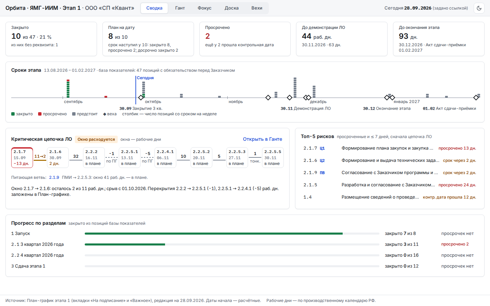
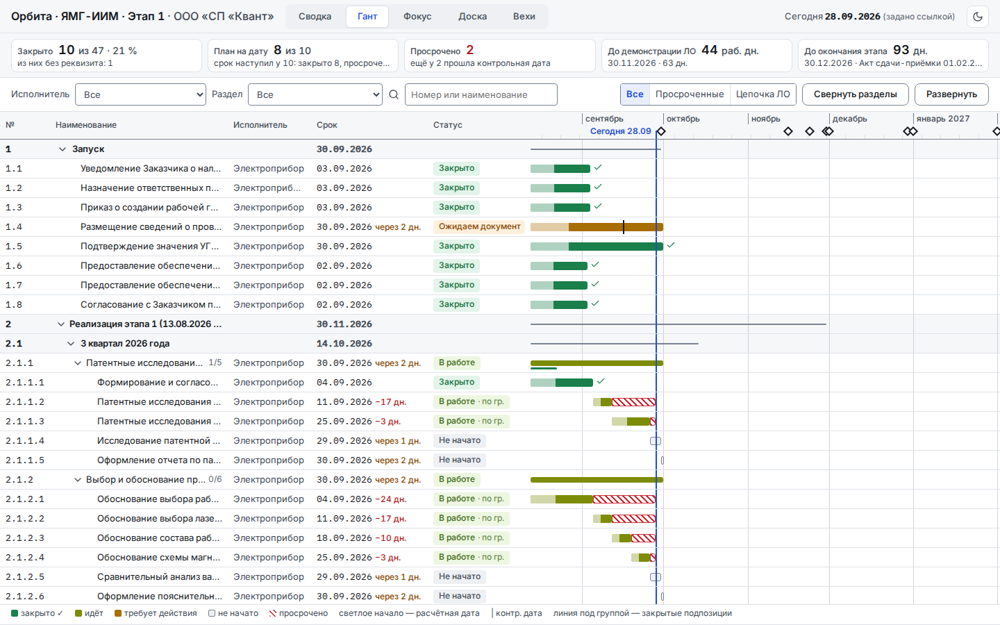
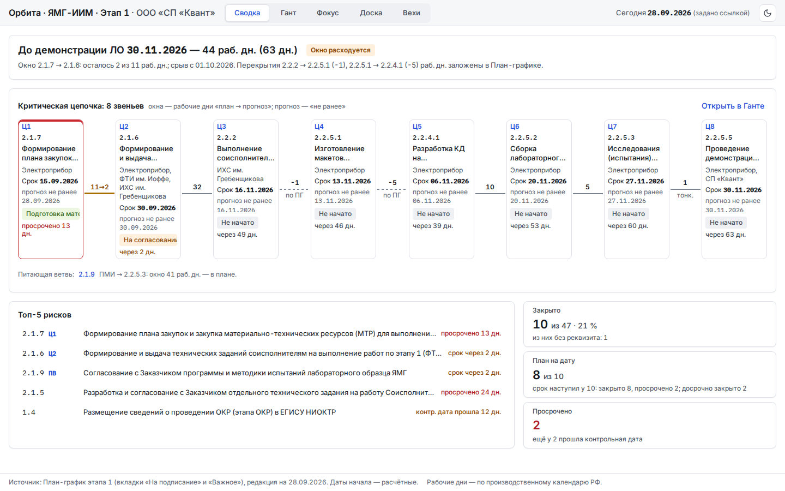

Орбита · ЯМГ-ИИМ · Этап 1 — выбор версии для демонстрации
Три версии работают на одних данных План-графика и одном своде правил расчёта. Режимы «Гант», «Фокус», «Доска», «Вехи», боковая панель позиции и повестка оперативки во всех версиях одинаковы. Версии различаются первым экраном, который руководство видит по ссылке. Выбранная версия становится основной страницей index.html.

В1 · versions/v1-panel.html«Панель»
- Ответ «где проект и что горит» за 10 секунд без прокрутки.
- Показатели сравниваются с планом на дату, а не с долей прошедшего времени.
- Цепочка ЛО — нитка звеньев с окнами «план → прогноз».
- Рекомендована советом для руководства (Р-44).

В2 · versions/v2-registry.html«Реестр»
- Первый экран — Гант-реестр, привычный по MS Project и подписанному План-графику.
- Сверху закреплена полоса из пяти показателей.
- Видна концентрация сроков 30.09 и 27.11.
- Сильна, если аудитория доверяет «своим строкам» больше, чем плиткам.

В3 · versions/v3-path.html«Путь к ЛО»
- Разговор о главном результате этапа — демонстрации ЛО 30.11.2026.
- Восемь звеньев цепочки карточками: срок, прогноз «не ранее», статус.
- Топ-5 рисков и ключевые показатели — рядом.
- Сильна для обсуждения рисков срыва демонстрации.
Во всех ссылках дата «сегодня» зафиксирована параметром ?today=2026-09-28 — картина совпадает с редакцией План-графика. Без параметра признаки считаются от текущей даты. Выборка исполнителя: ?org=elektropribor, ?org=fti, ?org=ihs. Тёмная тема: ?theme=dark.